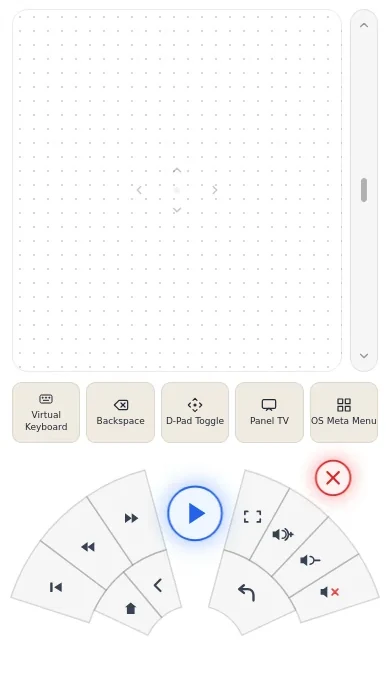
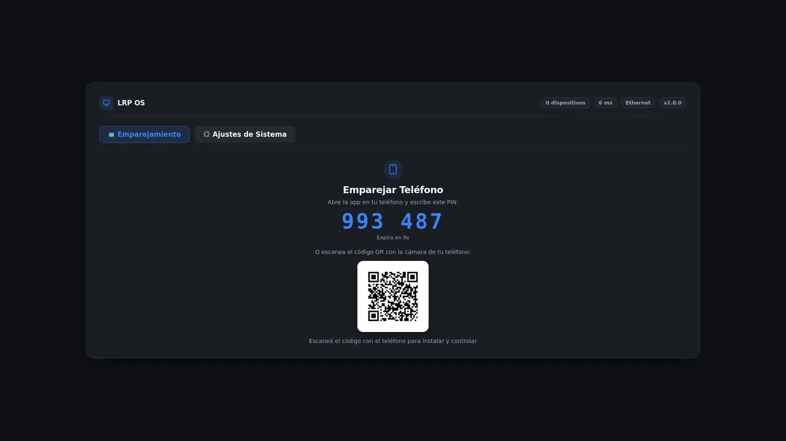
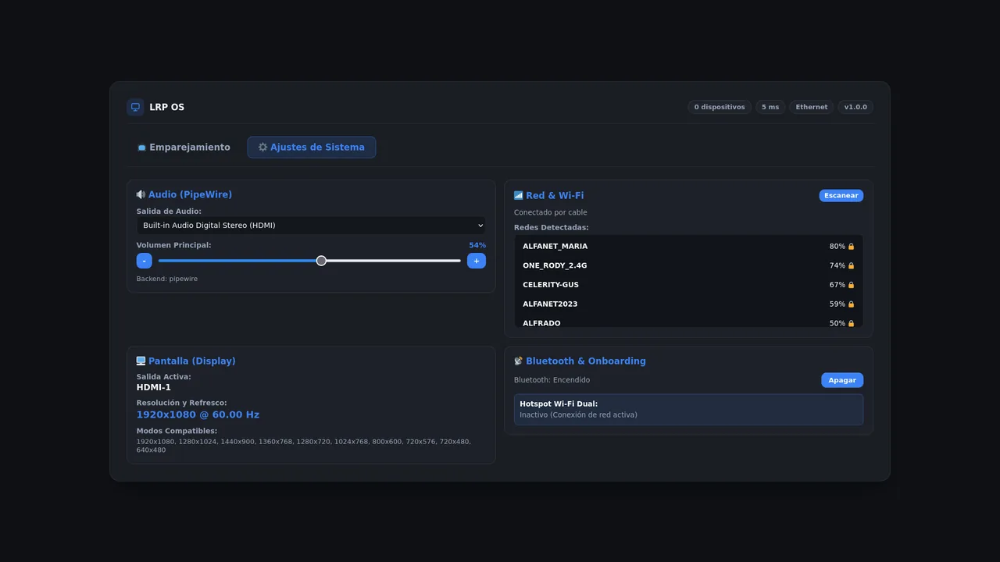

Convierte tu PC en una Smart TV controlada desde el teléfono.
LRP OS es una ISO Debian que arranca directo en un panel a pantalla completa. El teléfono es el control remoto: touchpad, teclado, apps y búsqueda. Sin nube, sin cuentas, sin licencia y sin telemetría.
Cada release publica la ISO junto a SHA256SUMS para verificar la descarga. Android usa la APK; iOS usa la PWA.
Tu PC como TV, tu teléfono como control.
Una distribución completa para x86_64, sin dependencias de servicios externos.
Sin nube
El control y la voz corren en tu red local. No hay cuentas, servicios de terceros ni telemetría: la PC funciona sin internet.
Control desde el teléfono
Touchpad, teclado, navegación y apps en un solo lugar. En Android se instala la APK; en iOS, la PWA.
Software libre
LRP OS es software libre bajo GNU GPL v3. El código y las licencias de terceros están publicados en el repositorio público.
El control en tu teléfono
El teléfono es el control remoto. Se empareja con un PIN de 6 dígitos o un código QR y funciona solo dentro de tu red local.

Android · APK
La APK es la app de control remoto para Android. Se instala en el teléfono, no en la PC.
Descargar lrp.apkiPhone / iPad · PWA
En iOS se usa la PWA: abre el panel en Safari y elige Compartir → Añadir a pantalla de inicio. No hay APK para iOS.
- Touchpad, teclado, navegación, apps y búsqueda.
- PIN de 6 dígitos o QR desde el panel de la TV.
- El control viaja cifrado dentro de tu red local.
El panel en la TV
Emparejamiento y ajustes del sistema, a pantalla completa en el televisor.


Hardware compatible.
Soporte declarado del sistema base y del equipo de referencia.
CPU
x86 de 64 bits (x86_64).
Firmware
UEFI. Secure Boot compatible mediante shim.
Memoria
4 GB de RAM como mínimo.
Disco
El espacio mínimo que indique el instalador de Debian.
Gráficos
GPU integrada —Intel HD 2500 validada— o GPU NVIDIA soportada por los drivers de Debian.
Pantalla y red
TV o monitor, y red local (Wi-Fi o cable) junto al teléfono.
Base: Debian 13 stable amd64 minimal · Sesión: Xorg/Openbox · Navegador: Firefox ESR
Otras configuraciones pueden funcionar, pero no están garantizadas.
LRP OS 1.0.0
La ISO se publica en GitHub Releases. Descarga también el archivo de sumas para verificar la imagen.
Android: la APK
La APK es la app de control remoto para Android. Se instala en el teléfono; la ISO se instala en la PC.
Descargar lrp.apkiOS: la PWA
En iOS se usa la PWA. Abre el panel en Safari y elige Compartir → Añadir a pantalla de inicio. No hay APK para iOS.
Android: permite instalar apps de origen desconocido. La app acepta el certificado del equipo sin validarlo; úsala solo en tu red local.
SHA256 APK (1.0.0): fcfb76e0383f5e3e7b72d7805618143945fd24a608ad4dd42df3d159b19c0bef
Tres pasos.
En una PC compatible, sin instalar Linux a mano.
Graba la ISO
Usa Rufus, Ventoy o dd para escribir la imagen en un pendrive.
Verifica la descarga con SHA256SUMS.
Arranca y elige “Instalar”
Inicia la PC desde el pendrive en modo UEFI y elige la opción de instalación del menú de arranque.
Abre el panel y escanea el QR
Al terminar, la TV muestra el panel con un PIN. Escanea el código QR desde el teléfono para emparejar y controlar.
Software libre, sin letra chica.
LRP OS es software libre bajo GNU GPL v3. El código completo y las licencias de terceros están en el repositorio público.
Créditos a Debian, Firefox ESR, PipeWire y whisper.cpp.